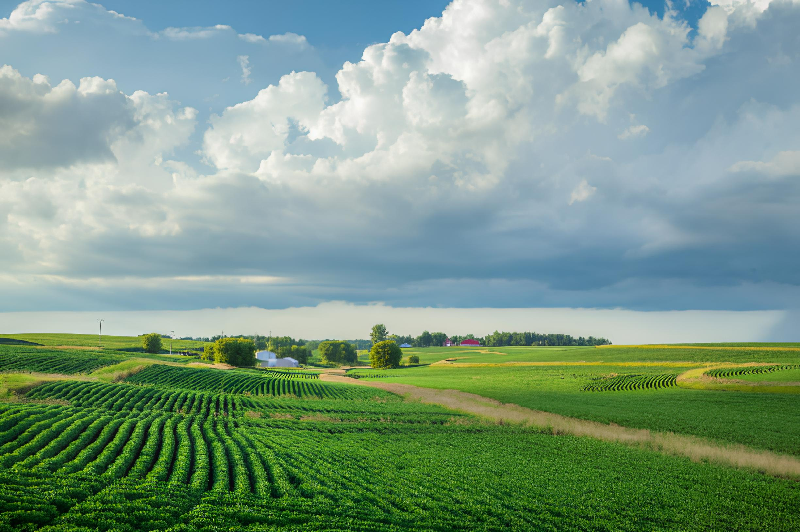

Working together to create sustainable, community-driven solutions for modern urban food access challenges. Join us in building a greener future.

of American households experienced food insecurity in 2021
Americans live in food deserts with limited access to fresh food
higher cost for fresh produce compared to processed alternatives
Food insecurity in urban areas is driven by multiple interconnected factors that create barriers to accessing nutritious food.
Areas with limited access to affordable food, often filled with processed options and lacking fresh produce.
Fresh, nutritious food often costs significantly more than processed alternatives, putting it out of reach.
Limited knowledge about healthy eating patterns and food preparation creates barriers to good nutrition.
We believe in empowering communities to create sustainable solutions that address urban food insecurity at its root causes.
Transform vacant lots into vibrant community growing spaces, providing fresh produce and strengthening bonds.
Establish locally-run food cooperatives that provide affordable, fresh options while creating economic opportunities.
School and community-based programs that teach valuable skills about nutrition, cooking, and healthy food choices.
Be part of the solution. Sign up to volunteer, receive updates, or learn how to start a community garden in your neighborhood.